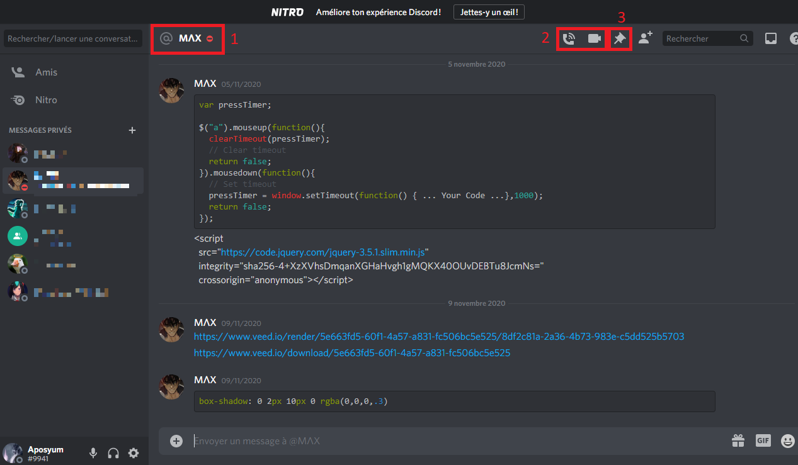
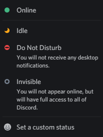
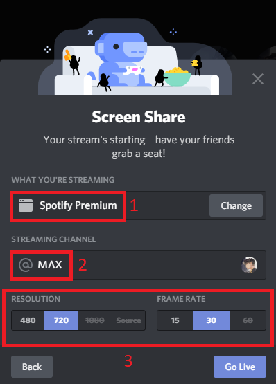
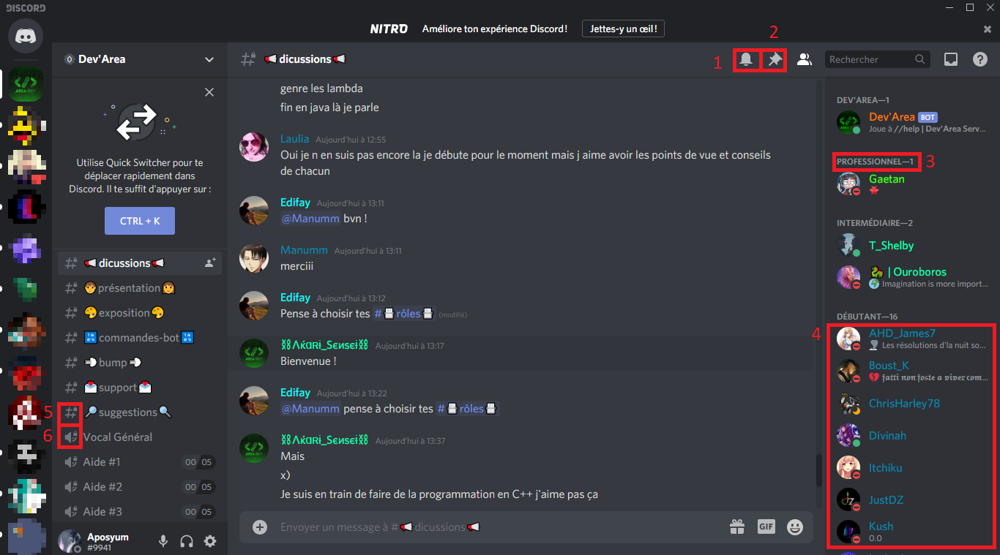

On this page you will find informations about :
Before going straight to private chats, it seems important to quickly clarify how adding contacts works on Discord. There are two ways to add another user on this platform :
Like most of others VoIP softwares, Discord offers a system of private discussions, with one or several people (up to 10 accounts in the same group). We find in these chats various functianalities, from simple voice call to screen sharing or the ability to pin messages.
This setting allows you to tell other users about your presence on the application when it is open. It has 5 values:
Where audio and video calls functions are common to all VoIP software and more broadly to all communication software, the term screen sharing needs to be clarified. Once you have joined, whether an audio or a video, a button similar to the mute button or end call one appears, representing a screen. If you click on it this is what you will see :
Messages can be pinned to set them aside. You can find all the pinned messages by clicking on the pin in the top right-hand corner of the screen. In the context of a private discussion, this feature can be useful to easily find information such as the professional contact of your interlocutor or the schedule of an appointment that you have pinned.
On a server, this feature provides quick access to announcements made by other users or to the server's rules. It is important to note, however, that while pinned messages are accessible to all users on the server, the function of pinning a message depends on the role and permissions that go with it.
Servers are mostly responsible of Discord's success. Each user can create as many community servers as he wishes on the topics that interest him and and other users on them via a link. Creating a server is basically creating a subnetwork within Discord.
This decomposition of the application into an astronomical number of subnetworks allows everyone to find what they search, and even if a user cannot find a server on the subject he is interested in, he can create one himself.
This is what a server looks like :
Roles allow the administrator (creator) of the server to delegate a part of his authority related to the management of the server to moderators but also to differentiate the members of the server between themselves.
Indeed, when the server administrator creates a role, he also decides the permissions granted to the holder of that role. These permissions go from the simple ability to access certain chanels or pin messages to the ability to ban a member from the server permanently.
Precise role definition also allows members to differentiate between themselves. In the above example of the French-speaking Dev'Area server, based on mutual assistance between developers, the roles make it possible to distinguish the level of experience of each user (professional, intermediate or beginner).
An important part of the servers, the chat rooms make it possible to organise discussions by giving each chat room its theme and define which users have access to it. They are comparable to private discussions but have the clear advantage of being accessible to all members of the server (may depend on the role of the members ) .
There are two types of them:
Although the application already has many features, some are missing and others can be improved. Users have therefore found a solution, approved by the company, Bots. Discord has made it possible for users to develop their own Bots. Abbreviations of robots, these programs are used to automate certain tasks, saving time for the users.
Some examples of Bots :